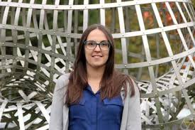
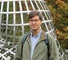
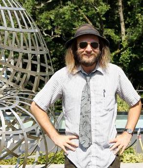
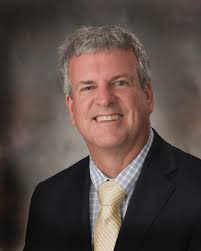
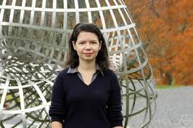
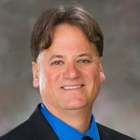

Nebraska Commutative Algebra: RTG (2024-2029)
Faculty

Eloísa Grifo

Brian Harbourne

Jack Jeffries

Tom Marley

Alexandra Seceleanu

Mark Walker
Programs
RTG postdoctoral trainees
We will be hiring a post doc; the start date is August 2025.
We'll post more details soon.
The contact for the search is Mark Walker.
RTG Seminar
Each RTG postdoc will run a year-long research seminar in their
second year (years 2, 3, and 5), vertically integrating their
research and teaching activities with those of our faculty and
graduate trainees. The RTG seminar will have a year-long focus
on an area of current interest. The Fall semester will be
centered on covering the background, and the Spring semester
will be a workshop in which students, postdocs, and faculty
work together on research problems. The goal will be to
publish original results or expository papers in a suitable
journal, with work continuing beyond the academic year.
Participants will produce materials to be publicly shared
on the RTG website, including lecture notes from seminar talks.
The RTG postdoc will co-direct their RTG seminar with a
faculty member. They will choose a topic in which the postdoc
has some experience, and they will co-direct the discussions
and the selection of problems to consider. The postdoc will
gain experience as a research mentor for students. By
including others in their program, the RTG seminar will
accelerate the postdoc’s research; the faculty advisor
will help ensure that the postdoc is not sacrificing their
own research program in the process.
Participation in the RTG seminar will be open to anyone
who is interested, though RTG graduate trainees will take
a central role and be required to give talks. The co-directors
will help students prepare their talks. This will help graduate
students transition from learning to research, further their
communication skills, and help advanced students expand the
breadth of their research.
RTG grad student trainees
- Fall 2024: Taylor Murray (advisor: Jack Jeffries)
- Fall 2024: Zach Nason (advisor: Tom Marley)
- Spring 2025: Sabrina Fowler (advisor: Eloísa Grifo)
- Spring 2025: Shah Roshan Zamir (advisor: Alexandra Seceleanu)
RTG visitors
Professional Development Workshop
In years 1, 3, and 5, we will host a workshop for 25 graduate
students and postdocs in algebra (broadly construed) from across
the US. We will focus on professional development with the aim
of equipping participants with practical tools they need to be
as competitive as possible in the job market, both for academic
and nonacademic career paths. Activities will include workshops
on curating websites, creating job application materials,
crafting elevator pitches for mathematicians and the general
public, and framing the broader impacts of one’s research
within societal and world challenges. It will also include
panels with junior and senior faculty members, including
someone who has served on a search committee, and a nonacademic mathematician.
First Generation First Year Research Experience for Undergraduates (REU)
Each summer, four undergraduates who are first generation college students
will participate in a 4-week long program. Students will be introduced
to the basics of proof writing, coding, and relevant foundational material,
and work on a small research question. Preference will be given to
incoming freshmen, with the goal of maximizing retention. The REU
students will be primarily guided by two of the RTG Graduate Trainees,
with support from a faculty member. Several of our current graduate
students are first generation college students, and they would be
excellent role models and mentors for the REU students; this will
also be a professional development opportunity for the RTG Trainees.
International REU
This REU will be held at CIMAT, in Guanajuato, Mexico, in years 1 and 4.
This eight-week program will enable 10 US citizen undergraduate students
recruited from institutions across the US to interact with commutative
algebra experts from the US and Mexico and experience international research collaboration.
Matemáticas Seminar
This is a grad student run seminar for everyone who
is interested in incresing their fluency in mathematical communication in Spanish,
or in helping others to do so.